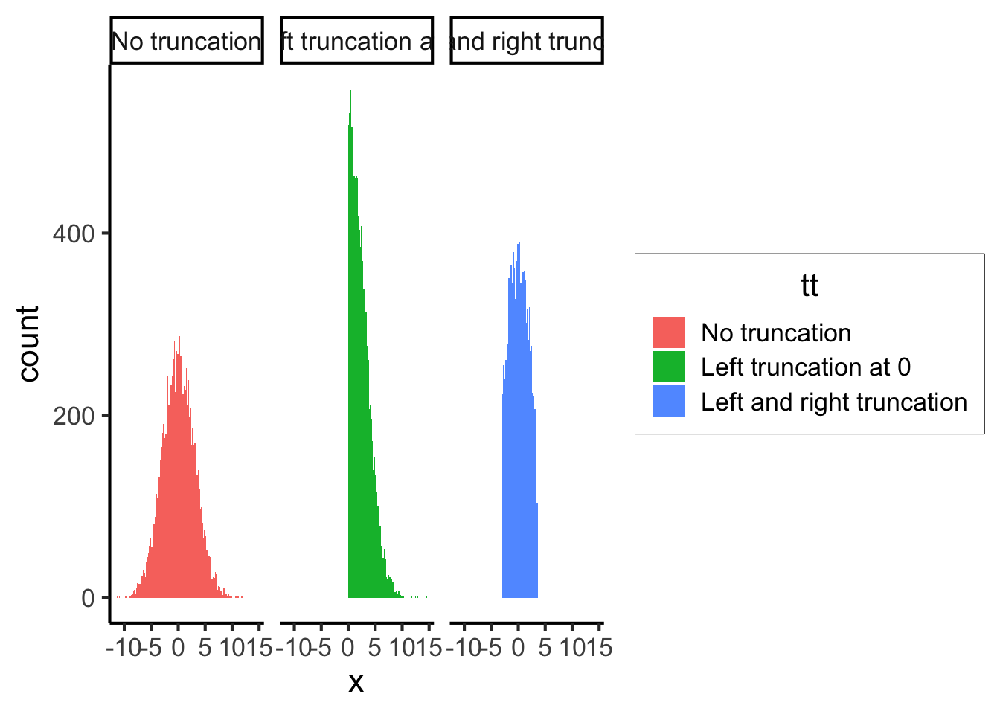

source("../dsan-globals/_globals.r")Week 7: Joint, Marginal, and Conditional Distributions
DSAN 5100: Probabilistic Modeling and Statistical Computing
Section 03
Class Sessions
Frequency Tables \(\leftrightarrow\) Probabilities
\[ \DeclareMathOperator*{\argmax}{argmax} \DeclareMathOperator*{\argmin}{argmin} \newcommand{\bigexp}[1]{\exp\mkern-4mu\left[ #1 \right]} \newcommand{\bigexpect}[1]{\mathbb{E}\mkern-4mu \left[ #1 \right]} \newcommand{\convergesAS}{\overset{\text{a.s.}}{\longrightarrow}} \newcommand{\definedas}{\overset{\text{def}}{=}} \newcommand{\definedalign}{\overset{\phantom{\text{def}}}{=}} \newcommand{\eqeventual}{\overset{\mathclap{\text{\small{eventually}}}}{=}} \newcommand{\Err}{\text{Err}} \newcommand{\expect}[1]{\mathbb{E}[#1]} \newcommand{\expectsq}[1]{\mathbb{E}^2[#1]} \newcommand{\fw}[1]{\texttt{#1}} \newcommand{\given}{\mid} \newcommand{\green}[1]{\color{green}{#1}} \newcommand{\heads}{\outcome{heads}} \newcommand{\iid}{\overset{\text{\small{iid}}}{\sim}} \newcommand{\lik}{\mathcal{L}} \newcommand{\loglik}{\ell} \newcommand{\mle}{\textsf{ML}} \newcommand{\nimplies}{\;\not\!\!\!\!\implies} \newcommand{\orange}[1]{\color{orange}{#1}} \newcommand{\outcome}[1]{\textsf{#1}} \newcommand{\param}[1]{{\color{purple} #1}} \newcommand{\pgsamplespace}{\{\green{1},\green{2},\green{3},\purp{4},\purp{5},\purp{6}\}} \newcommand{\prob}[1]{P\left( #1 \right)} \newcommand{\purp}[1]{\color{purple}{#1}} \newcommand{\sign}{\text{Sign}} \newcommand{\spacecap}{\; \cap \;} \newcommand{\spacewedge}{\; \wedge \;} \newcommand{\tails}{\outcome{tails}} \newcommand{\Var}[1]{\text{Var}[#1]} \newcommand{\bigVar}[1]{\text{Var}\mkern-4mu \left[ #1 \right]} \]
Frequency Tables
- What does this tell us on its own (before computing proportions in our heads) that is useful for probability?
- Answer: Not very much!
- But, if we can find the overall total, then it would tell us a lot (everything we need to know)!
This tells us, e.g., there are 5 honors students in grade 10
| \(H = 0\) | \(H = 1\) | |
|---|---|---|
| \(G = 10\) | 10 | 5 |
| \(G = 11\) | 6 | 4 |
| \(G = 12\) | 7 | 1 |
A frequency table where each row corresponds to a grade in a certain senior high school, each column corresponds to honor-student-status (\(H=1\) represents honors, \(H=0\) represents non-honors), and each cell contains the number of students in that grade with that honors-status
Why Do We Need The Total?
- Q1: Someone asks the probability that a randomly-selected student will be an honor student in 11th grade.
- Q2: Someone asks what proportion of students are honors
- Q3: Someone asks what % of 12th grade are honors
Q1, for example, is asking us for \(\Pr(G = 11, H = 1)\), a question we can answer if we know the joint distribution \(f_{G,H}(v_G, v_H)\).
Back to the Naïve Definition
Using our naïve definition of probability, we can compute this probability using the frequencies in the table as
\[ \Pr(G = 11, H = 1) = \frac{\#(G = 11, H = 1)}{\#\text{ Students Total}} \]
Plugging in the values from Table 1, we obtain the answer:
\[ \Pr(G = 11, H = 1) = \frac{4}{33} \approx 0.121 \]
Frequency Table \(\rightarrow\) Probability Table
- When we divide by 33, we are normalizing the counts, producing probabilities (normalized counts)
- By normalizing all cells in the table, we convert our frequency table into a probability table
Computing Overall Total by Column
We could compute the total by summing columns, then summing over our individual column totals to get 33:
| \(H = 0\) | \(H = 1\) | Total | |
|---|---|---|---|
| \(G = 10\) | 10 | 5 | |
| \(G = 11\) | 6 | 4 | |
| \(G = 12\) | 7 | 1 | |
| Total | 23 | 10 | 33 |
Computing Overall Total by Row
Or, we could compute the total by summing rows, then summing over our individual row totals to get 33:
| \(H = 0\) | \(H = 1\) | Total | ||
|---|---|---|---|---|
| \(G = 10\) | 10 | 5 | 15 | |
| \(G = 11\) | 6 | 4 | 10 | |
| \(G = 12\) | 7 | 1 | 8 | |
| Total | 33 |
Bringing Both Methods Together
| \(H = 0\) | \(H = 1\) | Total | ||
|---|---|---|---|---|
| \(G = 10\) | 10 | 5 | 15 | |
| \(G = 11\) | 6 | 4 | 10 | |
| \(G = 12\) | 7 | 1 | 8 | |
| Total | 23 | 10 | 33 |
Frequencies to Probabilities
- Now (before we think about row/column totals) let’s use overall total (33) to convert counts into probabilities:
| \(H = 0\) | \(H = 1\) | Total | |
|---|---|---|---|
| \(G = 10\) | \(\frac{10}{33}\) | \(\frac{5}{33}\) | \(\frac{15}{33}\) |
| \(G = 11\) | \(\frac{6}{33}\) | \(\frac{4}{33}\) | \(\frac{10}{33}\) |
| \(G = 12\) | \(\frac{7}{33}\) | \(\frac{1}{33}\) | \(\frac{8}{33}\) |
| Total | \(\frac{23}{33}\) | \(\frac{10}{33}\) | \(\frac{33}{33}\) |
Distributions in Discrete World
One Table, Three Distributions!
Now that we have normalized counts, different pieces of this table give different probability distributions:
- Joint Distribution \(f_{G,H}(v_G, v_H)\): Look at value in row \(v_G\), col \(v_H\)
- Marginal Distributions
- \(f_G(v_G)\): Look at total for row \(v_G\)
- \(f_H(v_H)\): Look at total for column \(v_H\)
| \(H = 0\) | \(H = 1\) | Total | |
|---|---|---|---|
| \(G = 10\) | \(\frac{10}{33}\) | \(\frac{5}{33}\) | \(\frac{15}{33}\) |
| \(G = 11\) | \(\frac{6}{33}\) | \(\frac{4}{33}\) | \(\frac{10}{33}\) |
| \(G = 12\) | \(\frac{7}{33}\) | \(\frac{1}{33}\) | \(\frac{8}{33}\) |
| Total | \(\frac{23}{33}\) | \(\frac{10}{33}\) | \(\frac{33}{33}\) |
Summary: Joint \(\rightarrow\) Marginal
- Note how marginal distributions were obtained by summing the joint distribution over a particular dimension:
- Summing each column (\(H = 0\) and \(H = 1\)) produced marginal distribution of \(H\):
| \(\Pr(H = 0, G = 10)\) | |
| + | \(\Pr(H = 0, G = 11)\) |
| + | \(\Pr(H = 0, G = 12)\) |
| = | \(\Pr(H = 0)\) |
| \(\Pr(H = 1, G = 10)\) | |
| + | \(\Pr(H = 1, G = 11)\) |
| + | \(\Pr(H = 1, G = 12)\) |
| = | \(\Pr(H = 1)\) |
- Summing each row (\(G = 10\), \(G = 11\), \(G = 12\)) produced marginal distribution of \(G\):
| \(\Pr(G = 10, H = 0)\) | + | \(\Pr(G = 10, H = 1)\) | = | \(\Pr(G = 10)\) |
| \(\Pr(G = 11, H = 0)\) | + | \(\Pr(G = 11, H = 1)\) | = | \(\Pr(G = 11)\) |
| \(\Pr(G = 12, H = 0)\) | + | \(\Pr(G = 12, H = 1)\) | = | \(\Pr(G = 12)\) |
What’s Missing? Conditional Distributions
- Conditional distribution does not represent a sum but a slice: we consider e.g. one particular row or one particular column of the table.
- üö®Warningüö®! unlike in joint and marginal cases, when computing conditional distributions we have to renormalize, since we are ‚Äúentering world‚Äù where we only consider subsets of the table where condition is met!
- Recall slide about how all distributions are conditional distributions:
\[ \begin{align*} = &\Pr(G = 10, H = 1 \mid \Omega) \\[0.6em] = &\frac{\#(G = 10, H = 1, \Omega)}{\#\text{ Total }(\Omega)\text{ ✅}} \end{align*} \]
\[ \begin{align*} = &\Pr(G = 10 \mid \Omega) \\[0.6em] = &\frac{\#(G = 10, \Omega)}{\#\text{ Total }(\Omega)\text{ ✅}} \end{align*} \]
\[ \begin{align*} = &\frac{\Pr(G = 10, H = 1)}{\Pr(H = 1)} \\[0.6em] = &\frac{\#(G = 10, H = 1)}{\#(H = 1)\text{ üò≥}} \end{align*} \]
Conditional Distributions from Columns
Let’s extract just the \(H = 1\) column:
| \(H = 1\) | |
|---|---|
| \(G = 10\) | 5 |
| \(G = 11\) | 4 |
| \(G = 12\) | 1 |
| Total | 10 |
| \(H = 1\) | |
|---|---|
| \(G = 10\) | \(\frac{5}{10}\) |
| \(G = 11\) | \(\frac{4}{10}\) |
| \(G = 12\) | \(\frac{1}{10}\) |
| Total | \(\frac{10}{10}\) |
- Before, 10 was a particular marginal frequency of interest; now 10 is just a total that we use to renormalize
Conditional Distributions from Rows
Let’s extract just the \(G = 10\) row:
| \(H = 0\) | \(H = 1\) | Total | |
|---|---|---|---|
| \(G = 10\) | 5 | 10 | 15 |
| \(H = 0\) | \(H = 1\) | Total | |
|---|---|---|---|
| \(G = 10\) | \(\frac{5}{15}\) | \(\frac{10}{15}\) | \(\frac{15}{15}\) |
- Before, 15 was a particular marginal frequency of interest; now 15 is just a total that we use to renormalize
Discrete World Summary
We now have the link between three types of distributions derived from our table:
| Distribution Type | How Many? | Example Value |
|---|---|---|
| Joint Distribution | 1 | \(\Pr(G = 11, H = 1)\) \(= \frac{4}{33}\) |
| Marginal Distributions | 2 | \(\Pr(H = 1) = \frac{10}{33}\) |
| Conditional Distributions | 6 | \(\Pr(G = 10 \mid H = 1)\) \(= \frac{5}{10}\) |
| \(H = 0\) | \(H = 1\) | Total | |
|---|---|---|---|
| \(G = 10\) | \(\frac{10}{33}\) | \(\frac{5}{33}\) | \(\frac{15}{33}\) |
| \(G = 11\) | \(\frac{6}{33}\) | \(\frac{4}{33}\) | \(\frac{10}{33}\) |
| \(G = 12\) | \(\frac{7}{33}\) | \(\frac{1}{33}\) | \(\frac{8}{33}\) |
| Total | \(\frac{23}{33}\) | \(\frac{10}{33}\) | \(\frac{33}{33}\) |
| \(H = 0\) | \(H = 1\) | |
|---|---|---|
| \(G = 10\) | \(\frac{10}{23}\) | \(\frac{5}{10}\) |
| \(G = 11\) | \(\frac{6}{23}\) | \(\frac{4}{10}\) |
| \(G = 12\) | \(\frac{7}{23}\) | \(\frac{1}{10}\) |
| Total | \(\frac{23}{23}\) | \(\frac{10}{10}\) |
Working Backwards
- Here we started from the joint distribution and derived marginal and conditional distributions
- Same intuition, plus math, lets us go in opposite direction: given marginal and conditional distributions, can derive joint distribution, since (conditional prob defn):
| \(\Pr(A \mid B)\) | \(=\) | \(\Pr(A, B)\) |
| \(\Pr(B)\) |
\[ \iff \]
| \(\Pr(A,B)\) | \(=\) | \(\Pr(A \mid B)\) | \(\cdot\) | \(\Pr(B)\) |
from which we can see that if we know the conditional distribution \(\Pr(B \mid A)\) and the marginal distribution \(\Pr(A)\), we can combine these (via multiplication) to obtain the joint distribution \(\Pr(B,A)\).
Continuous World
Moving to Continuous World
- Intuitions from discrete world do translate into good intuitions for continuous world, in this case!
- Can “move” discrete table into continuous space like Riemann sums “move” discrete sums into integrals:

“Smoothing” Our Example
- Instead of discrete \(G\) with \(\mathcal{R}_G = \{10, 11, 12\}\), we have a continuous \(G\) with \(\mathcal{R}_G = [10,12] \subset \mathbb{R}\) (“progress” through senior HS)
- Instead of discrete \(H\) with \(\mathcal{R}_H = \{0, 1\}\), now we keep track of continuous “honors spectrum” \(H\) with \(\mathcal{R}_H = [0, 1] \subset \mathbb{R}\)
- A student near the beginning of 10th grade who is towards the “high end” of the “honors spectrum”: (\(G = 10.03\) and \(H = 0.95\))
“Smoothing” Our Tables
- Sums become integrals
- Re-normalization (ensuring that probability mass values sum to 1) becomes ensuring that probability density values integrate to 1.
- What comes in place of frequency table?
- Answer in theory: Joint pdf
- Answer in practice: Depends on the context üò¨
Continuous Joint pdfs
- The volume of this Hershey Kiss is exactly \(1\)
- Integrating over a region \(C\) gives us
\[ \frac{\text{Volume}(\{(X,Y) \mid (X,Y) \in C\})}{\text{Volume}(\text{Hershey Kiss})} = \Pr((X,Y) \in C) \]
Conditional pdfs
- Now, if we learn that \(Y = y_0\), can take “slice” at \(y = y_0\)
- Total area of this slice is not \(1\), so \(f_{X,Y}(x, y_0)\) is not a valid pdf
- Dividing by total area of slice would generate a valid pdf. What is this area? \(f_X(y_0)\)
- \(\implies\) \(f_{X \mid Y = y_0}(x \mid y_0) = \frac{f_{X,Y}(x, y_0)}{f_X(y_0)}\) is valid (conditional) pdf

Working Backwards Redux
- While in discrete world we could easily provide a table, in continuous world we often/usually have to work backwards; we may just be given:
- \(G \sim \mathcal{U}(10, 12)\)
- \(H \sim \ddot{\mathcal{N}}(\mu = 0.5, \sigma = 0.1, a = 0, b = 1)\), and
- \(G \perp H\) (so \(\Pr(G \mid H) = \Pr(G), \Pr(H \mid G) = \Pr(H)\))
- (i.e., marginal distributions = conditional distributions).
The Marginal pdfs of \(G\) and \(H\)
- Since we know \(G \sim \mathcal{U}(10,12)\), we know (or we could look up) that \(G\) has pdf
\[ f_G(v_G) = \frac{1}{12 - 10} = \frac{1}{2}. \]
- \(H\) has a slightly fancier distribution, the truncated normal distribution, but nonetheless a pdf we can derive from (a) knowing the pdf of the normal distribution and (b) knowing what we’ve just talked about regarding conditional distributions
The Truncated Normal Distribution
- \(\ddot{\mathcal{N}}\) may look scary, but \(X \sim \ddot{\mathcal{N}}(\mu, \sigma, a, b)\) just means that \(X\) can be “constructed from scratch” (similar to Problem 1 on the Lab 5 Assignment) as
\[ X \sim \mathcal{N}(\mu, \sigma) \implies [X \mid a < X < b] \sim \ddot{\mathcal{N}}(\mu, \sigma, a, b) \]
rnormt <- function(n, range, mu, s = 1) {
# range is a vector of two values
F.a <- pnorm(min(range), mean = mu, sd = s)
F.b <- pnorm(max(range), mean = mu, sd = s)
u <- runif(n, min = F.a, max = F.b)
qnorm(u, mean = mu, sd = s)
}
library(data.table)
library(simstudy)
library(paletteer)
defC <- defCondition(condition= "tt == 1",
formula = "rnormt(10000, c(-Inf, Inf), mu = 0, s = 3)")
defC <- defCondition(defC, "tt == 2",
formula = "rnormt(10000, c(0, Inf), mu = 0, s = 3)")
defC <- defCondition(defC, "tt == 3",
formula = "rnormt(10000, c(-3, 3.5), mu = 0, s = 3)")
dd <- genData(30000)
dd <- trtAssign(dd, nTrt = 3, grpName = "tt")
dd <- addCondition(defC, dd, "x")
dd[, tt := factor(tt,
labels = c("No truncation", "Left truncation at 0", "Left and right truncation"))]
ggplot(data = dd, aes(x = x, group = tt)) +
geom_histogram(aes(fill = tt), alpha = 1, binwidth = .2, boundary = 0) +
facet_grid(~tt) +
theme(panel.grid = element_blank(),
axis.title = element_blank(),
legend.position = "none") +
dsan_theme()
simstudy package documentationThe Truncated Normal pdf
- Since we see a conditioning bar on the previous slide, we can infer what the pdf of this conditional distribution would look like. If \(X \sim \ddot{\mathcal{N}}(\mu, \sigma, a, b)\), then \(X\) has pdf
\[ f_X(v) = \frac{\frac{1}{\sigma}\varphi\left(\frac{v_H-\mu}{\sigma}\right)}{\Phi\left(\frac{b-\mu}{\sigma}\right) - \Phi\left(\frac{a - \mu}{\sigma}\right)} \approx \frac{\Pr(X = v, a < X < b)}{\Pr(a < X < b)} \]
- \(\varphi\) is the pdf of \(\mathcal{N}(0,1)\)
- \(\Phi\) is the CDF of \(\mathcal{N}(0,1)\)
(note the consistent usage of lowercase letters to describe pdfs and capital letters to describe CDFs, even in Greek!)
Back to Working Backwards
- By the definition of independence, we can obtain joint pdf \(f_{G,H}(v_G, v_H)\) by multiplying the marginal pdf \(f_G(v_G)\) and marginal pdf \(f_H(v_H)\):
\[ \begin{align*} f_{G,H}(v_G, v_H) &= f_G(v_G) \cdot f_H(v_H) \\ &= \frac{\frac{1}{2\sigma}\varphi\left(\frac{v_H-\mu}{\sigma}\right)}{\Phi\left(\frac{b-\mu}{\sigma}\right) - \Phi\left(\frac{a - \mu}{\sigma}\right)} \end{align*} \]
Moving Forwards Again
- We’ve arrived at the case we had in discrete world, where we know the joint distribution!
- We can integrate wherever we took sums in the discrete case to obtain marginal pdfs:
\[ \begin{align*} f_G(v_G) &= \int_{0}^{1}f_{G,H}(v_G,v_H)\mathrm{d}v_H = \frac{1}{2}, \\ f_H(v_H) &= \int_{10}^{12}f_{G,H}(v_G, v_H)\mathrm{d}v_G = \frac{\frac{1}{\sigma}\varphi\left(\frac{v_H-\mu}{\sigma}\right)}{\Phi\left(\frac{b-\mu}{\sigma}\right) - \Phi\left(\frac{a - \mu}{\sigma}\right)} \end{align*} \]
Conditional Distributions in Continuous World
And we can compute conditional pdfs by renormalizing so that the denominator is no longer the integral of the distribution over all its possible values (hence just the number \(1\)) but a ratio of joint distribution to marginal distribution values like the following:
\[ f_{H \mid G}(v_H | v_G) = \frac{f_{G,H}(v_G, v_H)}{f_G(v_G)}. \]
You Don’t Have To Stare Helplessly At Scary Math!
- Try to link the continuous equations back to their simpler discrete forms
- Work with the discrete forms to develop intuition, then
- Convert sums back into integrals once you’re ready
A Concrete Strategy
- Start by discretizing (“binning”) the possible values of a continuous RV to obtain a discrete RV:
- Split \([10,12]\) into three equal-length bins, \([0,1]\) into two equal-length bins
- Simulate \((G, H)\) pairs, sort into bins, plot joint / marginal / conditional distributions of binned data
- As you make bins thinner and thinner…
Thinking Through Specific Multivariate Distributions
- From \(2\) to \(N\) variables!
The Multinoulli Distribution
This may seem like a weird/contrived distribution, but it’s perfect for building intuition, as your first \(N\)-dimensional distribution (\(N > 2\))
\(\mathbf{X}\) is a six-dimensional Vector-Valued RV, so that
\[ \mathbf{X} = (X_1, X_2, X_3, X_4, X_5, X_6), \]
where \(\mathcal{R}_{X_1} = \{0, 1\}, \mathcal{R}_{X_2} = \{0, 1\}, \ldots, \mathcal{R}_{X_6} = \{0, 1\}\)
But, \(X_1, X_2, \ldots, X_6\) are not independent! In fact, they are so dependent that if one has the value \(1\), the rest must have value \(0\), so that we can infer the support of \(\mathbf{X}\):
\[ \begin{align*} \mathcal{R}_{\mathbf{X}} = \{ &(1,0,0,0,0,0),(0,1,0,0,0,0),(0,0,1,0,0,0), \\ &(0,0,0,1,0,0),(0,0,0,0,1,0),(0,0,0,0,0,1)\} \end{align*} \]
Lastly, need to define the probability that \(\mathbf{X}\) takes on any of these values. Let’s say \(\Pr(\mathbf{X} = \mathbf{v}) = \frac{1}{6}\) for all \(\mathbf{v} \in \mathcal{R}_{\mathbf{X}}\). Do we see the structure behind this contrived case?
(For math major friends, there is an isomorphism afoot… For the rest, it’s an extremely inefficient way to model outcomes from rolling a fair die)
The Multivariate Normal Distribution
- We’ve already seen the matrix notation for writing the parameters of this distribution: \(\mathbf{X}_{[k \times 1]} \sim \mathcal{N}_k(\boldsymbol\mu_{[k \times 1]}, \Sigma_{[k \times k]})\)
- Now we get to crack open the matrix notation for writing its pdf:
\[ f_\mathbf{X}(\mathbf{v}_{[k \times 1]}) = \underbrace{\left(\frac{1}{\sqrt{2\pi}}\right)^k \frac{1}{\sqrt{\det(\Sigma)}}}_{\text{Normalizing constants}} \exp\left(-\frac{1}{2}\underbrace{(\mathbf{v} - \boldsymbol\mu)^\top \Sigma^{-1} (\mathbf{v} - \boldsymbol\mu)}_{\text{Quadratic form}}\right) \]
- Try to squint your eyes while looking at the above, and compare with the pdf we’ve seen for 1D \(\mathcal{N}(\mu,\sigma)\) (W05) and the structure you’ve seen for 2D \(\Sigma\) (W06):
\[ f_X(v) = \frac{1}{\sigma\sqrt{2\pi}}\bigexp{-\frac{1}{2}\left(\frac{v - \mu}{\sigma}\right)^2} \]
\[ \begin{align*} \mathbf{\Sigma} &= \begin{bmatrix}\sigma_1^2 & \rho\sigma_1\sigma_2 \\ \rho\sigma_2\sigma_1 & \sigma_2^2\end{bmatrix} \\[0.1em] \implies \det(\Sigma) &= \sigma_1^2\sigma_2^2 - \rho^2\sigma_1^2\sigma_2^2 \\ &= \sigma_1^2\sigma_2^2(1-\rho^2) \end{align*} \]
Quadratic Forms
- Quadratic forms will seem scary until someone forces you to write out the matrix multiplication!
- Start with the 1D case: \(\mathbf{v} = [v_1]\), \(\boldsymbol\mu = [\mu_1]\), \(\Sigma = [\sigma^2]\). Then
\[ (\mathbf{v} - \boldsymbol\mu)^\top \Sigma^{-1} (\mathbf{v - \boldsymbol\mu}) = (v_1 - \mu_1)\frac{1}{\sigma^2}(v_1 - \mu_1) = \left(\frac{v_1-\mu_1}{\sigma}\right)^2. \]
The 2D Case
- Let \(\mathbf{v} = \left[\begin{smallmatrix}v_1 \\ v_2\end{smallmatrix}\right]\), \(\boldsymbol\mu = \left[ \begin{smallmatrix}\mu_1 \\ \mu_2 \end{smallmatrix}\right]\), \(\Sigma\) as in previous slide. Then \(\mathbf{v} - \boldsymbol\mu = \left[ \begin{smallmatrix} v_1 - \mu_1 \\ v_2 - \mu_2 \end{smallmatrix} \right]\).
- Using what we know about \(2 \times 2\) matrix inversion,
\[ \Sigma^{-1} = \frac{1}{\det(\Sigma)}\left[ \begin{smallmatrix} \sigma_2^2 & -\rho \sigma_2\sigma_1 \\ -\rho \sigma_1\sigma_2 & \sigma_1^2\end{smallmatrix} \right] = \frac{1}{\sigma_1^2\sigma_2^2(1-\rho^2)}\left[ \begin{smallmatrix} \sigma_2^2 & -\rho \sigma_2\sigma_1 \\ -\rho \sigma_1\sigma_2 & \sigma_1^2\end{smallmatrix} \right] \]
- So we can write everything as just a bunch of matrix multiplications:
\[ \begin{align*} &(\mathbf{v} - \boldsymbol\mu)^\top \Sigma^{-1} (\mathbf{v - \boldsymbol\mu}) = \frac{1}{\sigma_1^2\sigma_2^2(1-\rho^2)}\begin{bmatrix}v_1 - \mu_1 & v_2 - \mu_2\end{bmatrix} \cdot \begin{bmatrix} \sigma_2^2 & -\rho \sigma_2\sigma_1 \\ -\rho \sigma_1\sigma_2 & \sigma_1^2\end{bmatrix} \cdot \begin{bmatrix}v_1 - \mu_1 \\ v_2 - \mu_2\end{bmatrix} \\ &= \frac{1}{\sigma_1^2\sigma_2^2(1-\rho^2)}\begin{bmatrix}(v_1-\mu_1)\sigma_2^2 - (v_2-\mu_2)\rho\sigma_1\sigma_2 & (v_2-\mu_2)\sigma_1^2 - (v_1-\mu_1)\rho\sigma_2\sigma_1 \end{bmatrix}\cdot \begin{bmatrix}v_1 - \mu_1 \\ v_2 - \mu_2\end{bmatrix} \\ &= \frac{1}{\sigma_1^2\sigma_2^2(1-\rho^2)}\left( (v_1-\mu_1)^2\sigma_2^2 - (v_1-\mu_1)(v_1-\mu_2)\sigma_1\sigma_2 + (v_2-\mu_2)^2\sigma_1^2 - (v_1-\mu_1)(v_2-\mu_2)\sigma_2\sigma_1 \right) \\ &= \boxed{\frac{1}{1-\rho^2}\left( \left(\frac{v_1-\mu_1}{\sigma_1}\right)^2 + \left(\frac{v_2-\mu_2}{\sigma_2}\right)^2 - 2\rho\frac{(v_1-\mu_1)(v_2-\mu_2)}{\sigma_1\sigma_2} \right)} \end{align*} \]
The 2D Case In Its FINAL FORM
\[ f_{\mathbf{X}}(\mathbf{v}) = C\bigexp{-\frac{1}{2}\frac{1}{1-\rho^2}\left( \left(\frac{v_1-\mu_1}{\sigma_1}\right)^2 + \left(\frac{v_2-\mu_2}{\sigma_2}\right)^2 - 2\rho\frac{(v_1-\mu_1)(v_2-\mu_2)}{\sigma_1\sigma_2} \right)} \]
where
\[ C = \frac{1}{2\pi\sigma_1\sigma_2\sqrt{1-\rho^2}}. \]
References
DeGroot, Morris H., and Mark J. Schervish. 2013. Probability and Statistics. Pearson Education.